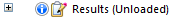

Display the Simulation Results environment
After you successfully mesh and solve a finite element analysis study, the Simulation Results environment is displayed automatically.
If you reopen a document containing a previously solved simulation study, results are not shown until you choose to display them. Look for this indicator on the Simulation pane:

.Do either of the following to display the analysis results:
-
From the ribbon, choose the Simulation tab→Results group→Results command.
-
On the Simulation pane in PathFinder, right-click the Results node
 and choose the View command.
and choose the View command.
Unload results from memory
The analysis results files (.ssd) produced by Solid Edge Simulation can be quite large for a large assembly or a document with multiple solved simulations. While the results files are unloaded from memory automatically when you save and close your document, you also can free memory while continuing to work in Solid Edge.
-
After closing the Simulation Results environment, in the Simulation pane, right-click the Results node and choose Unload Results.